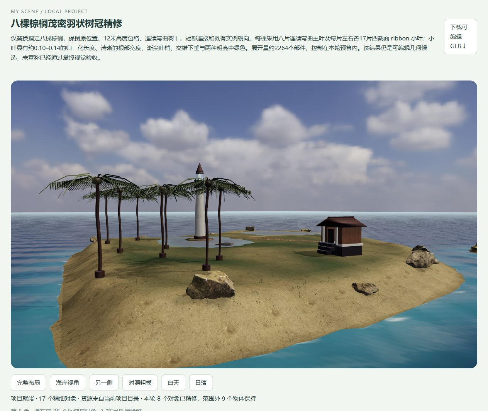

2026-10-08 · 当前原场景阶段成果已整理。
保留原三岛效果，补充入口出口、控制原理、探索过程、使用方式、业务扩展与后续优化。查看最新完整说明 ↗ · 浏览原场景 ↗
CAPABILITY BASELINE / V5
从绘图到受控 3D 项目。
归纳当前已经实现的能力、真实验证和限制，作为后续按业务扩展的基线。
核心链路：用户布局／粗模 → 模型完善 → 程序验证与装配 → 局部修改 → 可运行交付。
空间与身份由用户定义；模型编写外观方案和几何部件；执行器检查范围、锁定、引用、预算、包络与输出。已有照片材质与神经资产分别记录来源。
打开归档精修场景 ↗ · 下载完整能力与源码哈希清单 ↓真实验证留下了什么？
当前原布局25个ID、17个细化对象。两轮局部任务实际修改8棵棕榈，其余9个物体的实例、模板、引用材质与朝向保持。新双岛布局保留12个来源ID及锁定灯塔。GLB重载、ZIP CRC/哈希、独立工程回放与226项测试通过。
具体模型ID没有返回，不标成Opus。图片入口由用户标注，没有自动恢复深度。这些检查不等于照片级品质验收。

当前边界
主要支持七类海岸区域与物体；任意场景的一次生成、自动视觉评分、完整碰撞／拓扑验收、多人协作与云端模型服务仍未实现；当前已有成果可通过静态站点浏览与下载。薄带叶片和部件生成改善了细节，但建筑、船体、植物还需按目标场景验收。
已新增业务验证：沿用原海岛添加对象介绍、参考、客户浏览与局部方案；六木屋营地独立作为业务示例保留。进入原场景工作室 ↗